Scene 1Warm-Up
▶ Start hereHow your Wonder Films lessons work1-minute videoOpen ▾
🎯 TodayI can…
- explain what protected land is and give an example.
- describe how biodiversity helps a habitat stay healthy.
- explain how human choices can harm or help wild habitats.

🔎 Mystery specimenWhat are these striped shells?
What to do: Press Inspect specimen. Move the magnifying lens over the shells, then tap 3 things you notice.
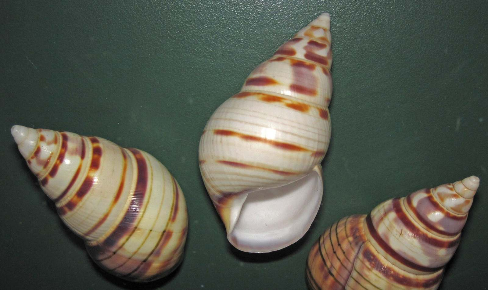
📚 Word WallWords scientists use
What to do: Tap or click each card to flip it and read what the word means.
Scene 2The Lesson
🛡️ Part 1What Is Protected Land?
Some land in the United States is set aside by law. Nobody can build houses, factories, or farms there. These are protected lands.
National parks are one kind of protected land. People can visit and explore them, but the plants, animals, and water inside are kept safe from the kind of damage people can cause.
🎞️ Put the scenes in orderHow does a gator hole save lives in the dry season?
What to do: Drag each photo into the film strip, from first to last. You can also tap a photo, then tap a frame. Get the order right and your strip becomes a movie.
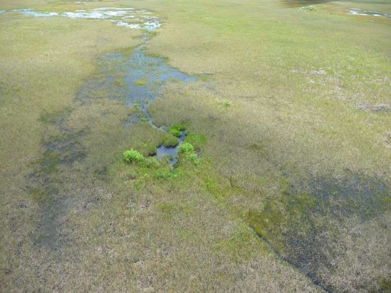
A friend says, "National parks are just for people to visit." What does the gator hole show?
🦋 Part 2Why Biodiversity Matters
A healthy ecosystem has many different kinds of living things. That variety is called biodiversity. Each species plays a role. Bees pollinate flowers. Owls eat mice. Decomposers break down dead leaves.
When one species disappears, others can be affected. A place with many kinds of living things is steadier and harder to break.
🧪 The Web TestWhich place can lose a species and stay healthy?
What to do: Follow the steps one at a time. You will pick, test, and then explain.
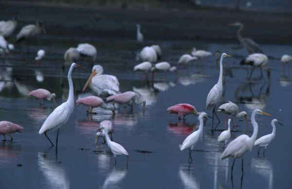
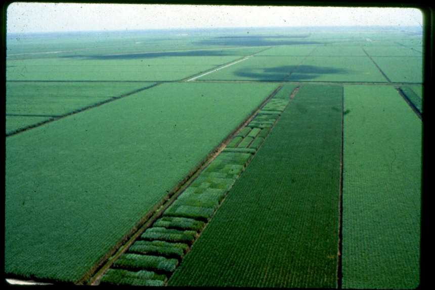
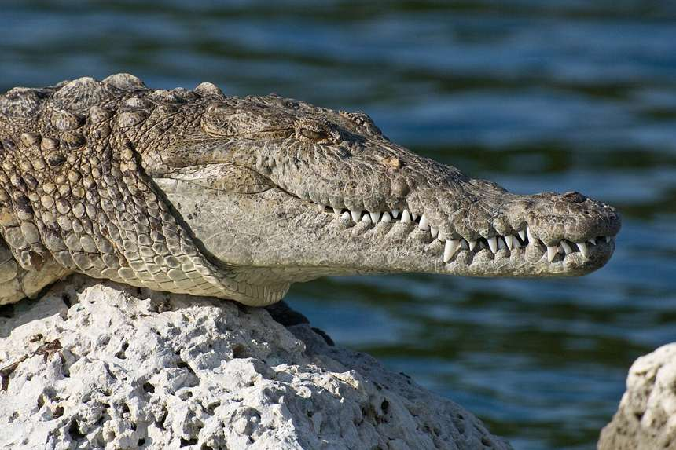
🌱 Part 3How Conservation Works
Rangers and scientists work inside national parks. They count animals, pull out invasive plants, and reduce pollution. About half of the original Everglades was drained for farms and cities. Today much of what's left is protected, and scientists are slowly helping it recover.
🐠 The Reef DiveDive down through a protected ocean park
What to do: First, make a prediction. Then brush the glowing stop: drag across it (or tap it again and again) until the place shows.
Is a protected ocean park home to just a few kinds of animals, or many?
surfaceSeagrassCoral
reefDeep
reef
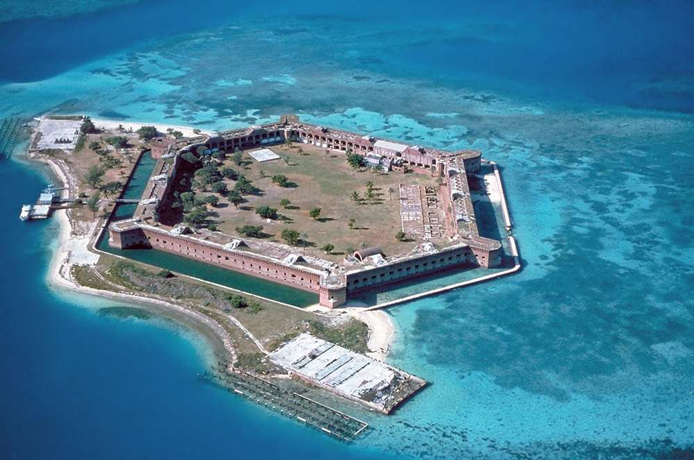
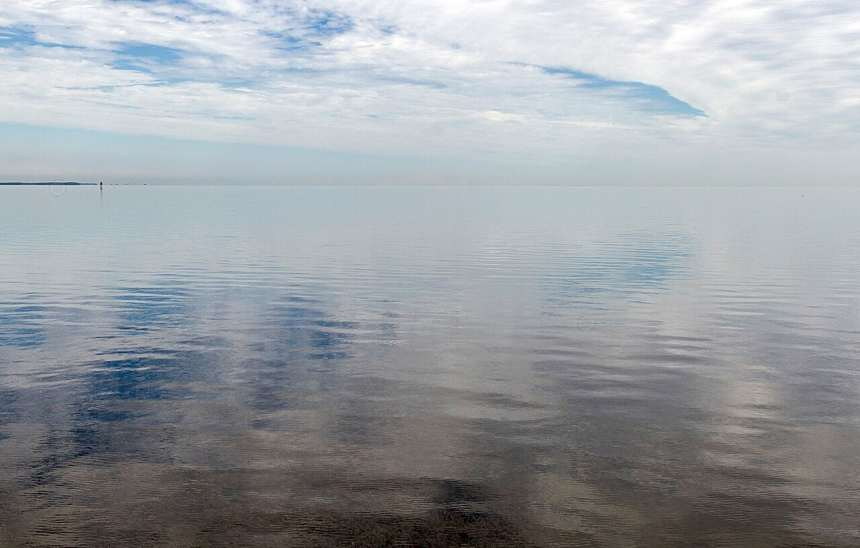
Stop 1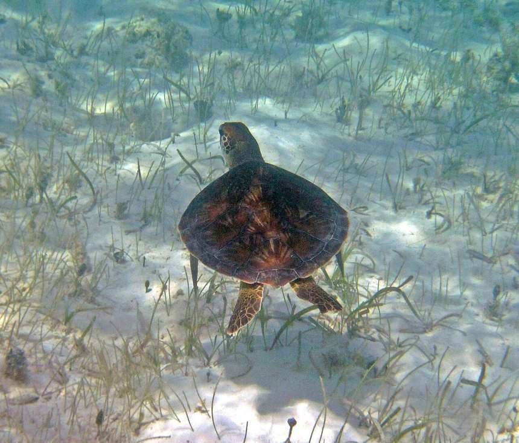
Stop 2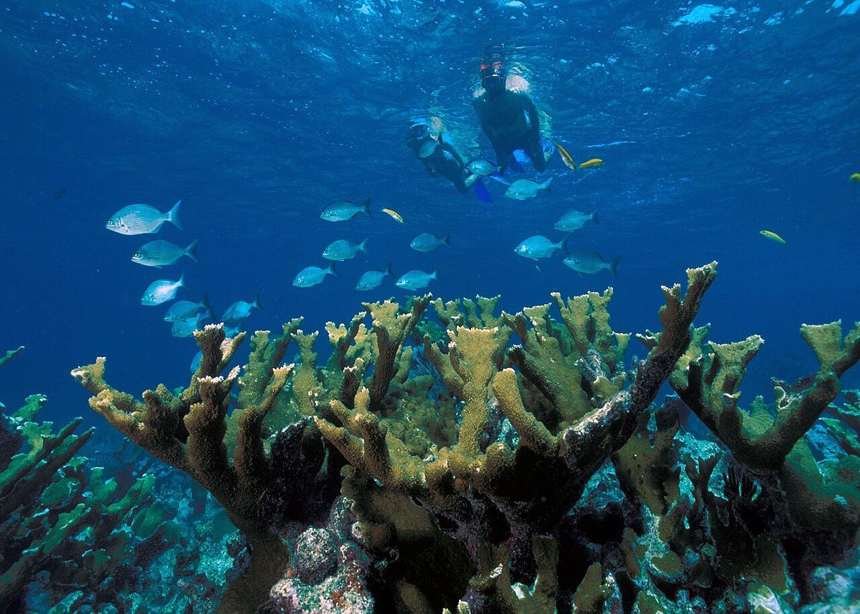
Stop 3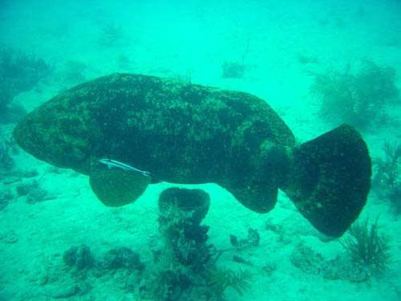
Stop 4More kinds, more connections. A protected ocean park keeps many habitats safe at once, from shallow seagrass to deep reefs. Fishing limits and no-anchor zones help the reef keep its biodiversity.
A friend says, "Losing one kind of fish from the reef doesn't matter." Is that right?
The bison came back
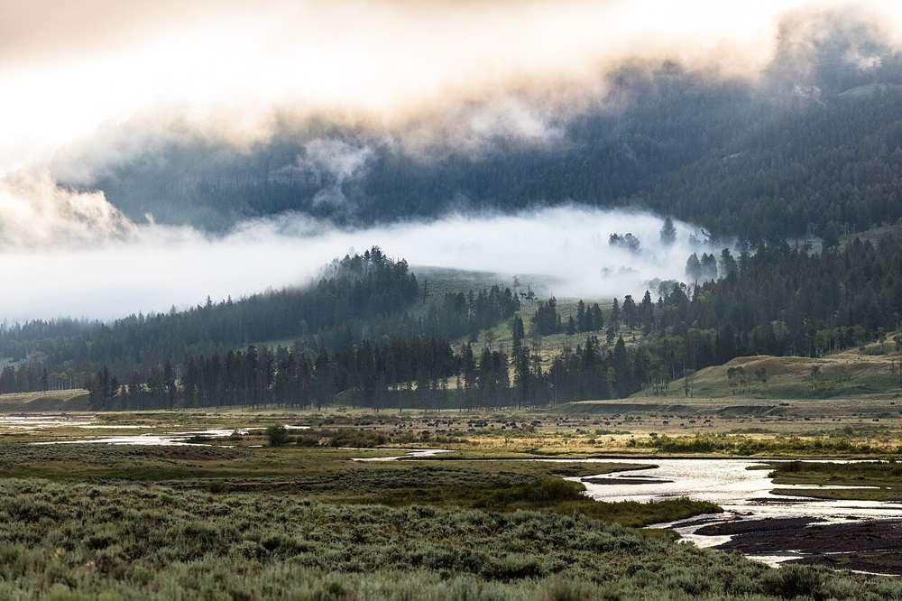
Millions of bison once roamed North America. Hunters killed so many that by the early 1900s, only about two dozen wild bison were left in Yellowstone.
The park protected them and brought in more. Today thousands of bison roam Yellowstone. They're the only place in the United States where wild bison have lived since prehistoric times.
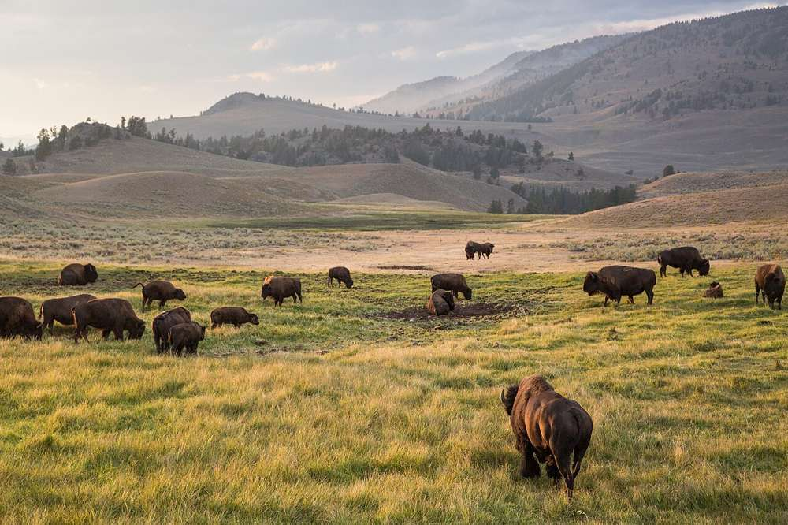
🕵️ Part 4Park Files
What to do: Pick 3 parks, one at a time. Tap a clue, then pick its habitat. Predict a living thing you'll find, and watch it appear.
| Park | My observation | Habitat | Living thing | My evidence |
|---|
🌍 Rebuild the placeUse your evidence to rebuild the place OPTIONALOpen ▾
What to do: Pick one you solved. Pick the place it points to, then pick the living things that belong there.
Pick one from your chart and explain it.
Start with: "Park __ protects…"
Scene 3Self-Check
What is biodiversity?
What most likely happens when a wild habitat is destroyed?
Which of these is the best example of conservation?
Scene 4Assignment
🔍 Part ASort the actions
What to do: Read each one. Pick the best answer, or type your answer.
1. A ranger removes invasive plants that are crowding out native wildflowers.
2. A developer drains a wetland to build a shopping center.
3. Scientists track wolf populations to make sure the forest ecosystem stays balanced.
4. A logging company cuts down a large section of old-growth trees.
5. Pick your most important choice above. In one sentence, explain why.
🚀 Part BShort answer
What to do: Answer in complete sentences. Use your science words.
1. Explain what a national park is and name one reason why protected land matters for animals.
2. Why is high biodiversity a sign of a healthy ecosystem? Give one example from what you learned today.
✍️ Write and explainIs it worth protecting wild land, even if people can't build or farm there?
What to do: Pick one from your evidence chart. Answer the three questions. Use at least one of the science words under the boxes.
Start with: "I think protecting wild land is important because…"
Start with: "I know this because the lesson showed that…"
Start with: "This makes sense because…"
🎨 Part CDraw and label
What to do: Draw a national park scene with at least 2 zones, like a marsh and a forest. Label a living thing in one zone, and one action that protects it.
🎬 Your question from Scene 1Can you answer it now?
What do you still wonder about? Write your question here. Then answer it.
📋 My answersEverything you wrote, in one place
(Your answers show up here as you write.)
How to turn in: Copy your answers and paste them into the Canvas assignment. Or download the file and upload it. Then press Save my drawing in Part C and upload your drawing too.
✅ Checklist
What to do: Tap each item when it is done. Items you finish on the page check themselves.
- My evidence chart has 3 parks and my explanation.
- Part A: all five answers.
- Part B: questions 1 and 2.
- Part C: my drawing and both labels.
- Write and explain, with at least one science word.
🎬 Premiere my park storyYour exhibit
What to do: Check your exhibit. Pick the one you wrote about, add your first name, then press Premiere film.
I observed…
It protects…
My evidence…
It tells us…
🎞️ This film's frames
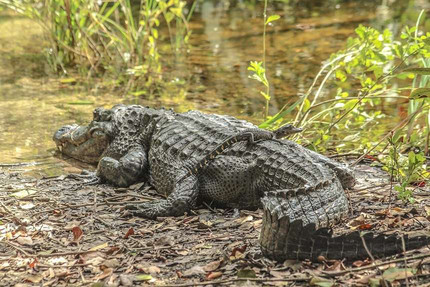
The gator hole
The Web Test
The Reef Dive
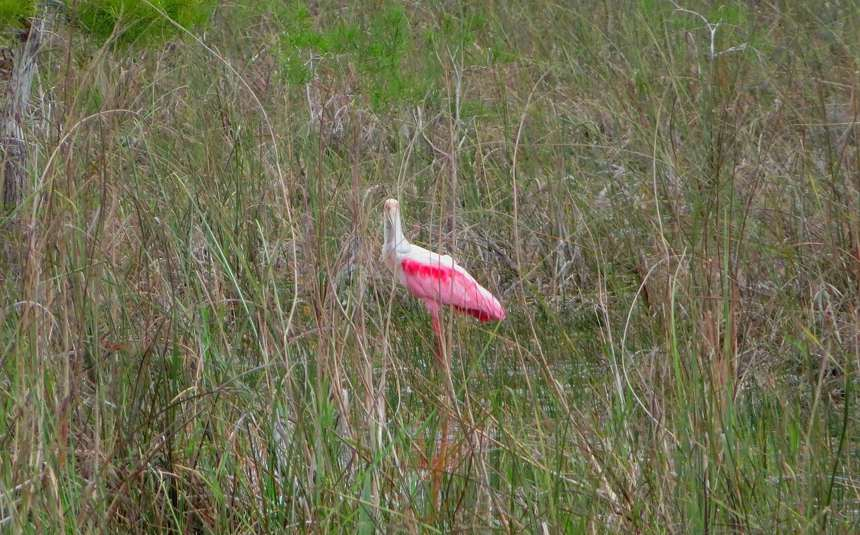
Park files
Earn all four frames in the Lesson, then finish the checklist.
🔜 Coming up next25.02 · Investigation: Protect a Park Proposal
Next time, find a real threat to a park habitat and write a plan to protect it.
Photo and music credits
- Biscayne American Crocodile NPS1, Judd Patterson, National Park Service biologist, Public domain
- Anhinga Trail (53558084704), NPS, Public domain
- Roseate Spoonbill, Road to Pa-hay-okee Overlook, Everglades National Park, Fl…, Ken Lund from Reno, Nevada, USA, CC BY-SA 2.0
- Yellowstone flood event 2022 Swollen Lamar River and Lamar Valley (52166237466), Yellowstone National Park, Public domain
- Bison herd, Lamar Valley (2c6600eb-b9e5-46fb-994b-3ba33cee9b59), Neal Herbert, Public domain
- Great Smoky Mountains National Park (5723903f-dd9c-4a28-b652-5b77bd7f4841), Victoria Stauffenberg, Public domain
- Plethodon jordani 2, Fredlyfish4, CC BY-SA 3.0
- Biscayne, Catholic 85 at English Wikipedia, CC BY-SA 3.0
- Biscayne National Park H-snorkel on elkhorn, National Park Service Digital Image Archives, Public domain
- Big Cypress National Preserve BICY1061, National Park Service Digital Image Archives, Public domain
- Puma concolor coryi cropped, George Gentry, Public domain
- Biscayne National Park V-snorkel entry, National Park Service Digital Image Archives, Public domain
- Green Sea Turtle grazing seagrass, P.Lindgren, CC BY-SA 3.0
- FKNMS - midnight blue parrotfish (27225663363), National Marine Sanctuaries, Public domain
- GG -1 Aggregation at Warriors Reef, Geraldecarroll, CC BY-SA 3.0
- Roseated spoonbill Everglades NP Brendan Burke (55249208100), USFWS Headquarters, Public domain
- Bison, Lamar Valley (92ddfbd2-3b56-4fa5-a714-3057ba96ec2f), Neal Herbert, Public domain
- The view from Lower Falls, Grand Canyon of the Yellowstone (32984622493), NPS / Neal Herbert, Public domain
- Transition from Sawgrass to Coastal Habitat, NPSPhoto (9250299462), Everglades NPS from Homestead, Florida, United States, Public domain
- Thomas Moran - Grand Canyon of the Yellowstone, Thomas Moran (1872), Public domain
- South Florida (MODIS), MODIS Land Rapid Response Team, NASA GSFC, Public domain
- Sunset in Shark Valley (53602648403), NPS, Public domain
- Biscayne Bay FL1, Acroterion, CC BY-SA 4.0
- Chelonia mydas (green sea turtle) (San Salvador Island, Bahamas) 9 (159980704…, James St. John, CC BY 2.0
- Elkhorn Coral Biscayne NP1, John Brooks, National Park Service photographer, Public domain
- Goliathgrouper1, Joe Contillo, NOAA fishery biologist, Public domain
- Sunset Over Shark Valley Slough (49859963138), NPS / Patty Palma, Public domain
- Gfp-florida-everglades-national-park-pond-with-wildlife, Unknown (public domain), Public Domain
- American Alligator and baby (53467660657), evergladesnps, Public domain
- Beauty and the beast (8500586039), Pavel Kirillov from St.Petersburg, Russia, CC BY-SA 2.0
- Aerial view of alligator hole (3efd265b-1dd8-b71c-07d2-adff37ffd152), NPS, Public domain
- Fort-Jefferson Dry-Tortugas, U.S. National Park Service, Public domain
- Liguus fasciatus floridanus (Florida tree snail) (24355731952), James St. John, CC BY 2.0
- Indian River Lagoon National Scenic Byway - An Array of Birds at Merritt Isla…, Unknown authorUnknown author or not provided, Public domain
- Canal Point Florida Sugarcane from Air 1968, Andrew Migneault, Public domain
- Bison herd in Lamar Valley on a foggy morning (36499082851), Yellowstone National Park, Public domain
- Music: "America the Beautiful" (Samuel A. Ward), played by "The President's Own" United States Marine Band in the 1950s, public domain (via Wikimedia Commons).
- Opti the owl: Optima Academy. Sound effects are made by the page. The gator-hole movie, the Web Test, and the Reef Dive are models; every place photo is real.